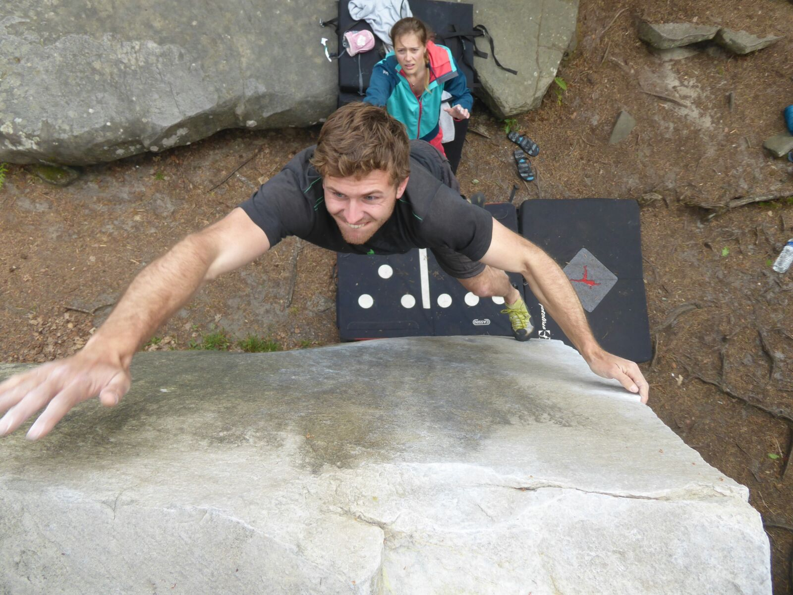
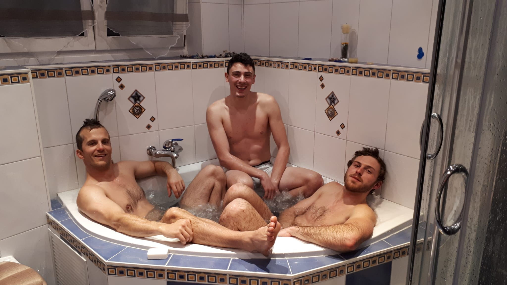
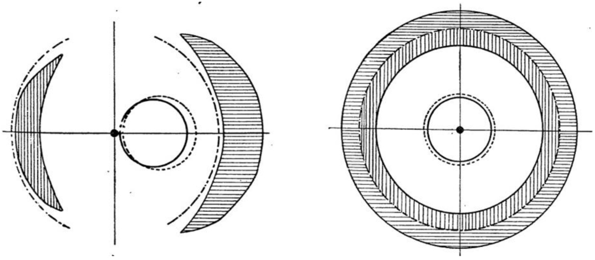
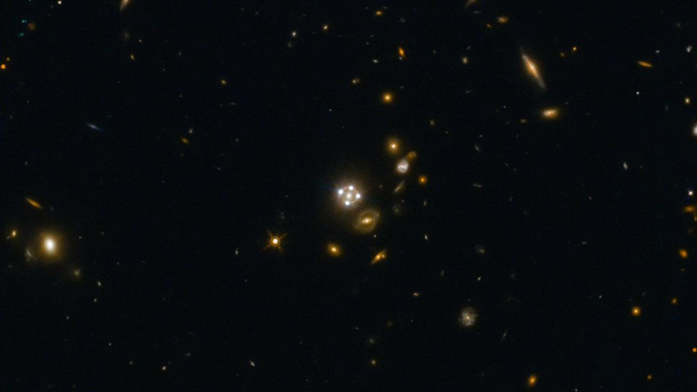
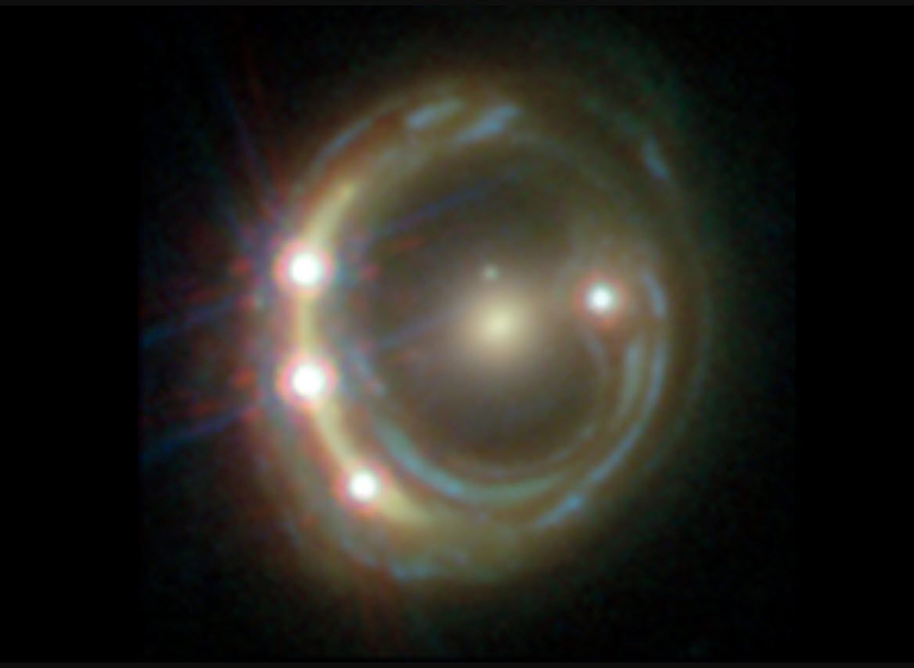
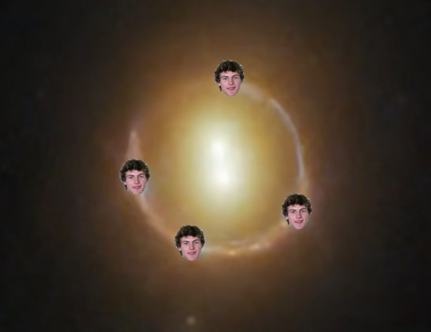

Martin Millon commença sa découverte du monde scientifique de manière précoce, faisant l'expérience concrète des champs électriques en mettant les doigts dans la prise à l'âge de six ans. C'est depuis cette expérience enrichissante qu'il prit connaissance de sa compréhension de concepts autrement non tangibles pour les autres humains, tristement enfermés dans le monde matériel rationnel. Désirant perfectionner sa compréhension de l'univers et aimant tellement les photons, il entreprit de études en physique à l'EPFL.
>
Martin à l'EPFL, déjà en harmonie avec la nature.
Ses études lui permirent de se familiariser avec les sciences traditionnelles qui, bien que fort limitées dans leur portée, lui donnèrent une excellente compréhension des domaines fascinants que sont la physique quantique et la cosmologie. Afin d'avoir accès à des équipements de pointe lui permettant de maximiser le couplage cosmique de ses chacras, il fit ensuite une thèse de doctorat en astrophysique car comme tout le monde le sait, la thèse donne un sacré bonus.
Martin durant sa thèse, mesurant les bovis cosmiques dans les confins de l'Arctique.
L'utilisation de téléscopes ultramodernes (c'est vrai, la science "mainstream" a quand même produit des accessoires utiles) lui permit d'affiner l'harmonisation de ses flux quantiques vitaux avec les modes de vibration du fond diffus cosmologique accolé. C'est finalement grâce à ses fascinant travaux qu'il révolutionna la science moderne et obtenu le titre de docteur.
Martin rééquilibre ses niveaux d'énergie avec Marion.Martin et Jehan harmonisent leurs Chacras.Martin avec ses disciples en camp de développement personnel.

Martin vise la lune!

Martin dirige une séance de méditation thérapeutique quantique de groupe.
La sagesse des étoiles
Comme tout le monde le sait, mon doctorat se concentre sur l'observation de quasars lentillés. Un Quasar, abbréviation de « source de rayonnement astrologique quasi-stellaire », est un noyau de galaxie extrêmement lumineux. Cet objet, le plus lumineux connu dans l'univers, est la région compacte entourant un trou noir supermassif dont la taille est de 10 à 10 000 fois le rayon de Schwarzschild du trou noir. Ils tirent leur énergie de leur disque d'accrétion, dont l'effet des forces dégageant l'orbite et comble le trou noir induit une émission électromagnétique axiale dont la luminosité bolométrique atteint des valeurs suffisantes pour provoquer faire annuler une nova. Un quasar est identifiable par sa signature électromagnétique, nous envoyant ainsi un message spatial.
Lorsqu'un quasar se trouve derrière un objet massif, la relativité générale courbe l'espace-temps et nous donne différentes images mirage du même quasar, tel que représenté figure 1.

Figure 1: les modes de vibrations harmoniques quantiques relativistes d'un quasar lentillé.
Comme tout le monde le sait, le monde conique est en pleine expansion, perturbant la quote de biens des comètes. La théorie des supercubes prédit une dépendance de la constante de Hubble sur le fond diffus cosmologique accollé, et donc sur la vitesse d'expansion de l'univers! Ceci est dû au fait que les photons, à bout de course, sont déviés de leur trajectoire originale, menant à plusieurs représentations du même objet.

Figure 2: Observation d'un Quasar lentillé et des quatres représentations d'un même objet, représentant les quatres fores fondamentales du cosmos.
Mais comment les photons choisissent-t'ils leur trajectoire? Nos doutes sont indecis à ce sujet, mais mes suppositions à moi sont simplement que les puits gravitationnels aiment tellement les photons, comme moi d'ailleurs. Et d'ailleurs, tout n'est que vibration: la lumière, la matière, l'écho des sons et même nos pensées! C'est la physique quantique qui le dit! Elle dit, comme démontré par Young, que le résultat d'une expérience, dépend de l'observateur. C'est pourquoi les images miroires dépendent de l'état d'esprit de l'astrologue maniant son téléscope durant les nuits paisibles. Car nous faisons un avec le Cosmos, abaissés devant tant de grandeur, dans une fragile harmonie de vibration intriquées.

Quasar lentillé aux images miroires en trident, en référence à Poséidon, d'où le nom de la constellation.
C'est ainsi que durant ma thèse, je puis non seulement préciser la douzième décimale de la constante de Hubble (il le fallait bien pour contenter la communauté scientifique et obtenir des sous), mais surtout, je puis mener des expériences révolutionnaires sur l'harmonisation quantique de l'âme avec les flux magnético-gravitationnels du cosmos. Pour se faire, rien de plus simple:

Images miroires en losange, représentant en haut l'esprit de l'observateur, et en bas les trois piliers de la connaissance: la science, la nature et la logique.